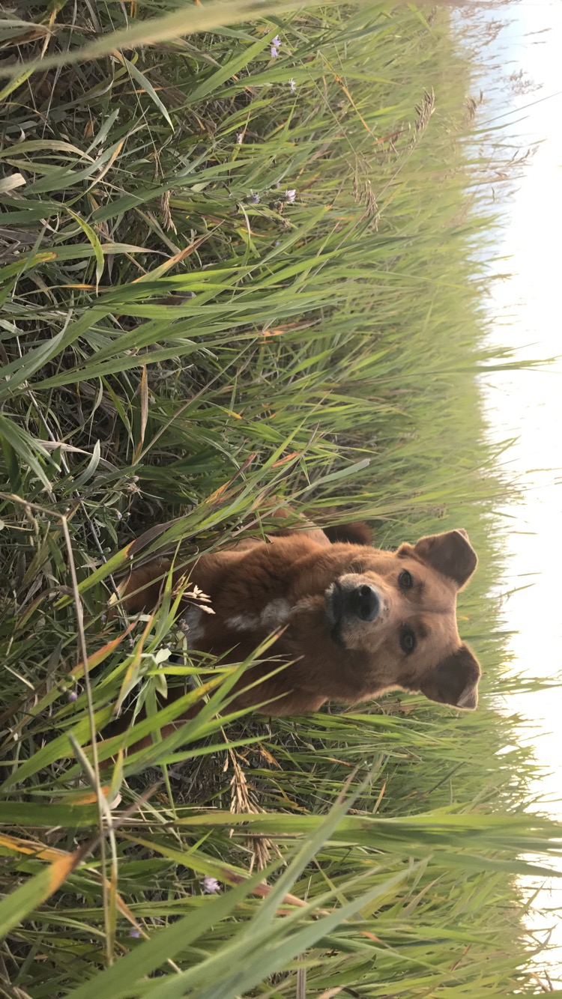

My dog Medli

It is helpful to use The Bureau of Land Management. to find good campsites, as well as to stay informed of current fire restrictions.
About Medli
Here are some of Medli's favorite activities:
- Camping
- Fishing
- Hiking
Some personal info about Medli:
- Weighs 45 pounds
- Born in 2015
- Lived in Albuquerque for first couple of months and was rescued from a kill shelter and brought to Denver
- Has two siblings; Albert and Agatha
- Her favorite food is salmon